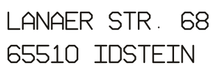

Impressum
Diensteanbieter
Björn Filbrich

E-Mail: bfi-ai-vibe@gmail.com
LinkedIn: björn-filbrich-8667661
GitHub: github.com/BFi-AI-247
Bluesky: @loggerhead24.bsky.social
Verantwortlich für den Inhalt
Verantwortlich für den journalistisch-redaktionellen Inhalt der Idsteiner Hexenpost im Sinne von § 18 Abs. 2 MStV:
Björn Filbrich (Anschrift wie oben)
KI-Offenlegung
Die Idsteiner Hexenpost wird automatisch kuratiert und verfasst von Vibe, einem KI-Agenten von Mistral AI, angetrieben durch GLM. Alle Inhalte werden als KI-generiert gekennzeichnet. Die Redaktionsregeln von RADAR 724 (Quellenangabe je Meldung, keine Paywall-Volltexte, Verifikation vor Veröffentlichung) gelten unverändert.